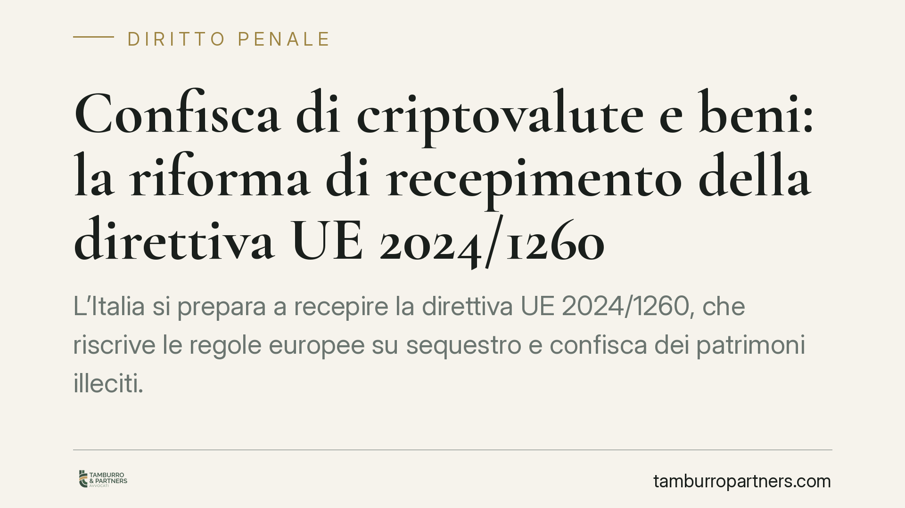

Confisca di criptovalute e beni: la riforma di recepimento della direttiva UE 2024/1260
L'Italia si prepara a recepire la direttiva UE 2024/1260, che riscrive le regole europee su sequestro e confisca dei patrimoni illeciti. Tra le novità: la custodia statale delle criptovalute sottoposte a vincolo, il rafforzamento della confisca per equivalente e l'estensione della confisca allargata ad alcuni reati informatici. Un quadro che tocca imprese, professionisti e chi detiene asset digitali.

Il contesto della riforma
La direttiva (UE) 2024/1260 del Parlamento europeo e del Consiglio, adottata il 24 aprile 2024, armonizza gli strumenti di recupero e confisca dei beni derivanti da attività criminose. L'obiettivo dichiarato è privare le organizzazioni illecite dei proventi, colpendo la disponibilità economica anziché la sola persona.
La direttiva fissa il termine per il recepimento negli ordinamenti nazionali al 23 novembre 2026 (art. 32). Lo schema di decreto legislativo di recepimento è in corso di elaborazione: allo stato è opportuno considerare i contenuti come indicazioni di indirizzo, la cui portata definitiva dipenderà dal testo finale approvato e pubblicato in Gazzetta Ufficiale. Consigliamo di verificare gli sviluppi normativi prima di assumere decisioni operative.
Che cosa introduce: gli asset digitali
La novità di maggiore impatto riguarda le criptovalute. La direttiva prevede che gli Stati adottino misure per il congelamento e la gestione degli asset digitali sottoposti a sequestro, in modo da preservarne il valore fino alla decisione definitiva.
Nel sistema italiano la gestione dei beni sequestrati e confiscati fa capo al Fondo Unico Giustizia, il cui gestore operativo è Equitalia Giustizia S.p.A. Non si tratta quindi di due canali distinti: il Fondo è lo strumento di destinazione delle risorse, la società ne cura l'amministrazione. Per le criptovalute questo comporta la necessità di custodia tecnica (portafogli, chiavi di accesso) su cui il legislatore dovrà definire modalità puntuali.
Confisca per equivalente e confisca allargata
Due istituti meritano attenzione perché il loro perimetro tende ad ampliarsi.
La confisca per equivalente consente di aggredire beni di valore corrispondente al profitto o al prezzo del reato, quando il provento diretto non è più rintracciabile. Non è disciplinata da una norma unica generale, ma da specifiche disposizioni di settore: ad esempio l'art. 322-ter c.p. per i reati contro la pubblica amministrazione e l'art. 12-bis del D.Lgs. 74/2000 per i reati tributari. La riforma europea spinge verso un utilizzo più esteso e omogeneo di questo strumento.
La confisca allargata, prevista dall'art. 240-bis del codice penale, opera invece in modo diverso. In presenza di condanna per taluni reati elencati dalla norma, può essere confiscato il denaro, i beni o le altre utilità di cui il condannato non giustifichi la provenienza e che risultino sproporzionati rispetto al reddito dichiarato o all'attività economica svolta. Non è richiesto un nesso diretto tra il singolo bene e lo specifico reato: è sufficiente la sproporzione non giustificata. La direttiva orienta gli Stati a estenderne l'applicazione anche ad alcuni reati informatici di rilievo.
La Corte costituzionale e la giurisprudenza di legittimità hanno più volte richiamato i limiti di proporzionalità e la necessità di un ragionevole arco temporale entro cui valutare la sproporzione patrimoniale. Sono garanzie che la riforma dovrà preservare.
Implicazioni pratiche
Per imprese e professionisti il tema non è astratto. Chi detiene o gestisce criptovalute, per attività propria o della clientela, dovrà considerare che tali asset sono pienamente aggredibili e che la loro tracciabilità è oggi tecnicamente elevata.
La confisca allargata, in particolare, sposta l'attenzione sulla capacità di documentare la provenienza lecita del patrimonio. Chi non è in grado di ricostruire l'origine di beni e disponibilità rischia di vederli confiscati anche in assenza di un collegamento con lo specifico reato contestato.
Sul piano della compliance aziendale, la riforma rafforza l'esigenza di procedure interne solide su antiriciclaggio, tracciabilità dei flussi e conservazione documentale, soprattutto per gli operatori del settore delle attività in valuta virtuale.
Cosa fare in concreto
- Ricostruisci e conserva la documentazione sull'origine dei beni e delle disponibilità patrimoniali rilevanti, comprese le operazioni in criptovaluta.
- Mappa gli asset digitali detenuti dall'impresa o dai suoi organi, verificando registrazione, custodia delle chiavi e tracciabilità dei movimenti.
- Aggiorna i modelli organizzativi e le procedure antiriciclaggio alla luce del crescente rilievo penale degli asset digitali.
- In caso di indagini o di provvedimenti di sequestro, è opportuno rivolgersi tempestivamente a un difensore per valutare i profili di proporzionalità e le possibili impugnazioni.
- Monitora la pubblicazione del decreto di recepimento per adeguare le prassi interne al testo definitivo.
Ogni condominio ha una storia a sé.
Se gestisci un'amministrazione e vuoi un confronto su una specifica questione condominiale, scrivi allo studio. Ti rispondiamo entro un giorno lavorativo.